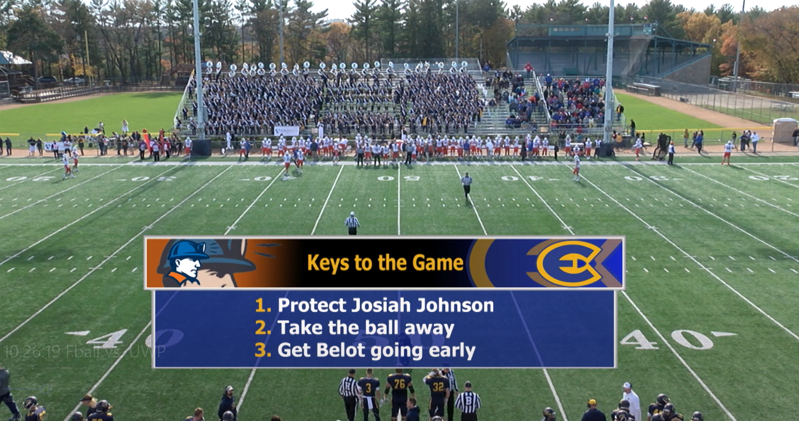
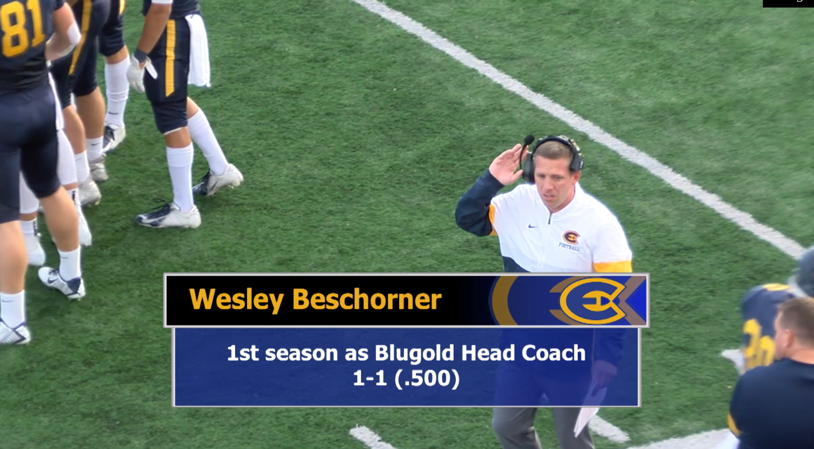
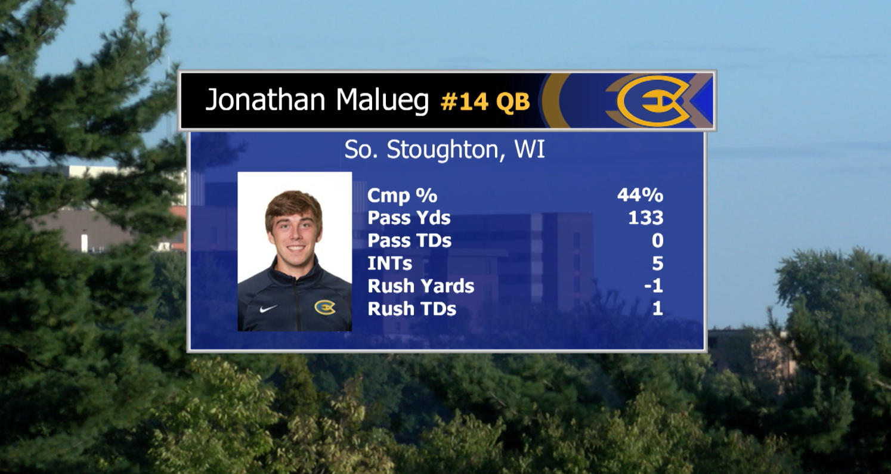
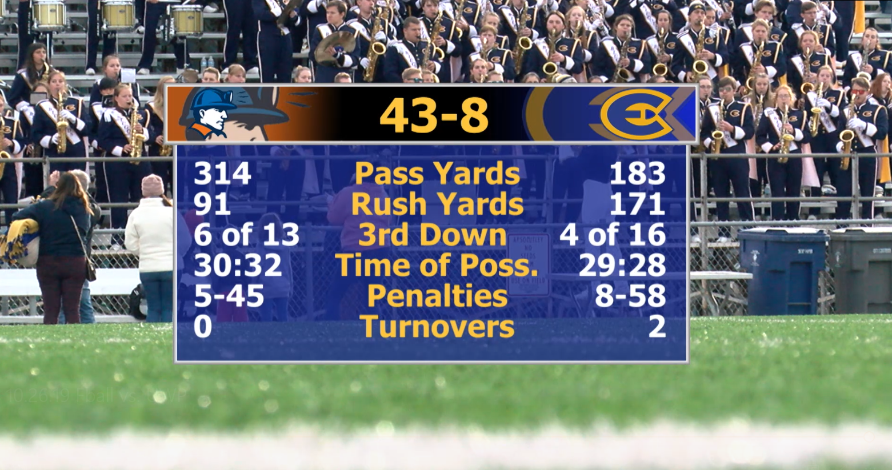

University of Wisconsin-Eau Claire
TV-10 Football Broadcasts
Fall 2018 and 2019
This is a collection of screenshots from a University of Wisconsin-Eau Claire Blugold football games. Blugold Sports are broadcast by the university's televisions station, TV-10. Broadcasts are live and shown on Eau Claire, Wisconsin's local television station WEAU. These are some of the graphics I made for the 2018 and 2019 football season.






